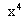
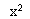
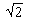
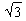

Algebra 1
okt. '96.
smer: R, N, V, Astronomija,
Mehanika
1. Neka je Tx semigrupa svih funkcija skupa X, h Î End(Tx) takvo da postoji konstantna funkcija koja se slika u permutaciju. Tada ("f Î Tx) h(f) = idx.
2. Neka je G = {x Î Z 221 ½ = 1}. Oderditi elemente grupe G i predstaviti je kao proizvod ciklicnih.
3. Neka je G grupa reda 490.
a) Dokazati da grupa G nije prosta.
b) Dokazati da grupa G ima normalnu podgrupu reda 245.
c) Dokazati da postoji podgrupa reda 35.
4. Odrediti korensko polje polinoma p(x) = + 4- 12 nad poljem Q.
a) Odrediti [K : Q].
b) Ako je q(x) minimalni polinom za + i nad Q, ispitati da li je K korensko polje tog polinoma.